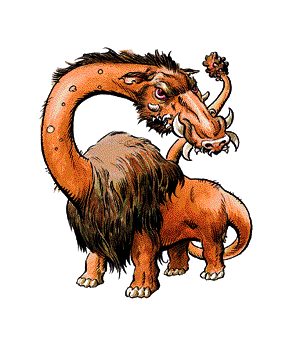

Catoblepas

CLIMATE/TERRAIN:
| Any swamp
|
FREQUENCY:
| Very rare
|
ORGANIZATION:
| Solitary
|
ACTIVITY CYCLE:
| Day
|
DIET:
| Omnivore
|
INTELLIGENCE:
| Semi (2-4)
|
TREASURE:
| (C)
|
ALIGNMENT:
| Neutral
|
NO. APPEARING:
| 1-2
|
ARMOR CLASS:
| 7
|
MOVEMENT:
| 6
|
HIT DICE:
| 6+2
|
THAC0:
| 15
|
NO. OF ATTACKS:
| 1
|
DAMAGE/ATTACK:
| 1-6+stun
|
SPECIAL ATTACKS:
| Gaze causes death
|
SPECIAL DEFENSES:
| Nil
|
MAGIC RESISTANCE:
| Nil
|
SIZE:
| L (6' tall at shoulder)
|
MORALE:
| Steady (11-12)
|
XP VALUE:
| 975
|
The catoblepas is a bizarre, loathsome creature that inhabits dismal swamps
and marshes. Its most terrifying features are its large bloodshot eyes, from
which emanate a deadly ray.
The body of the catoblepas is like that of a large, bloated buffalo, and its
legs are stumpy, like those of a pygmy elephant or a hippopotamus. Its long,
snakey tail is swift and strong, and can move with blinding speed. The head of the
catoblepas is perched upon a long, weak neck, and would be much like that of a
warthog except that the catoblepas is uglier.
Combat: In combat, the catoblepas relies on two forms of attack.
First, it will use its strong, snaky tail to strike and stun its foes. Anyone
struck by the tail suffers 1-6 points of damage and has a base 75% chance of
being stunned for 1-10 melee rounds. The base chance of being stunned is lowered
by 5% for every level above first, or for each additional Hit Die in the case
of monsters and animals.
Despite the danger of a tail strike, the catoblepas' second mode of attack is
by far the more fearsome of the two. The gaze of the catoblepas emanates a deathray, with a 60 yard range. Any creature meeting its gaze dies without a saving
throw. If a party is surprised by a catoblepas, there is a 1 in 6 chance that
someone in the group has met the creature's gaze. Those who close their eyes or
act with their eyes averted can still be affected by the deathray, but a saving throw vs. death magic is allowed.
Since the neck of the creature is very weak, it has only a 25% chance of
raising its head and using the deathray on subsequent rounds. If the catoblepas and its target are both relatively
still, this increases by 15% per melee round. If the catoblepas is forced to
follow quick motions it has only a 10% chance of raising its head.
If more than one catoblepas is attacking, the monsters will cooperate with one
another, attempting to herd their targets into a crossfire.
Habitat/Society: For the most part, the catoblepas is a meandering creature that wanders about
its swamp nibbling on marsh grasses and the like. Once a month, usually under
the light of the full moon, the catoblepas seeks out meat to round out its diet.
It is at this time that the catoblepas is most likely to be encountered by
adventurers.
The lair of the catoblepas is usually some sort of sheltered place where the
ground is firm. More often than not it is surrounded by a tall stand of reeds or
other marsh plants. The creature has little fear of being disturbed in its
lair, since it is frequently the most feared carnivore in the swamp.
The catoblepas mates for life and when more than one catoblepas is encountered
they will be a mated pair. There is a 10% chance that the couple will have a
single offspring with them. An immature catoblepas will have half the Hit Dice
of an adult. It takes almost nine years for the offspring to reach youthful
maturity and an adult female will bear but one child every 10 or 12 years. Both the
male and the female will cooperate in raising the offspring.
When the catoblepas ventures forth to hunt it eats fish, marsh birds, eels,
water rats, large amphibians, snakes, and other swamp animals. The catoblepas
usually stuns its prey with its tail and then kills it with its gaze.
The catoblepas is an opportunistic predator when it hunts and it is not above
eating carrion. Since it is semi-intelligent, it will treat parties of humans
with respect, preferring to size them up first. As a rule, it will not attack
unless it is hunting or feels that its mate or offspring is threatened. Being
long-lived (150 to 200 years or so) and semi-intelligent, the catoblepas is
capable of learning from the mistakes of earlier encounters and hunts.
The catoblepas has no special interest in wealth, and the listed treasure type
is the result of victorious encounters with intruders. It attaches no value to
the coins, gems, and occasional magical items strewn about the lair.
Ecology: The catoblepas has no natural enemies, since its gaze provides it with more
than adequate protection from even the fiercest of predators.
Index